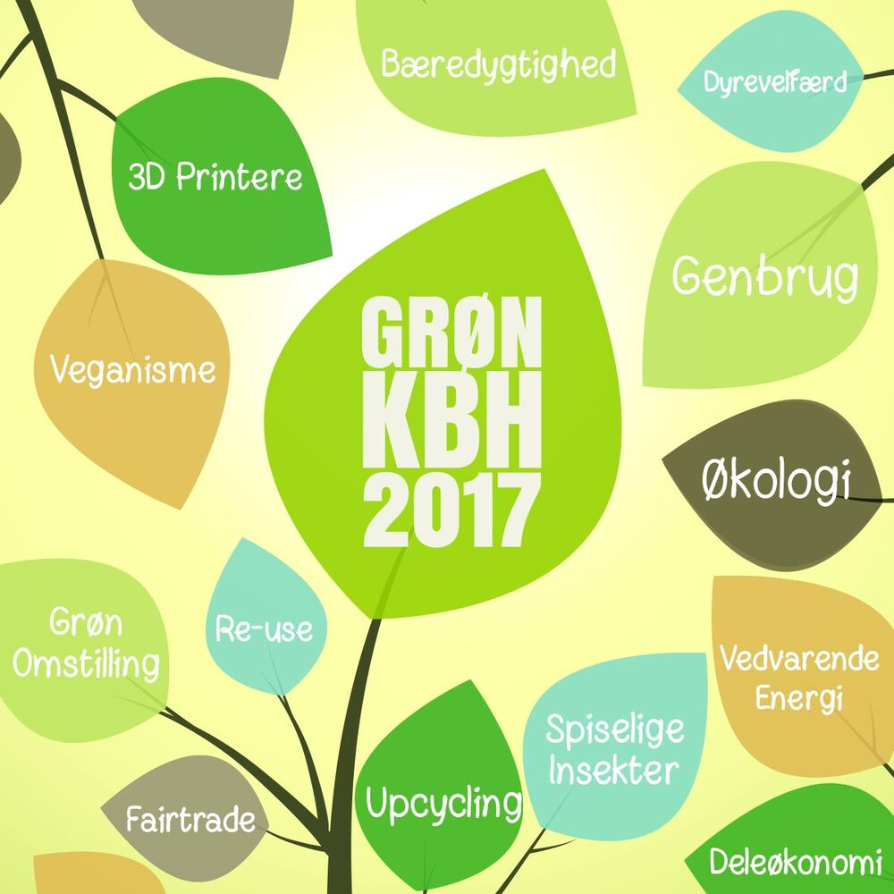

GreenSpeak og GRØN KBH
Se og lyt
GreenSpeak ville styrke salget og gøre flere opmærksomme på virksomheden.
Nysgerrighed og perspektiv
Som medejer og Sales & Marketing Director arbejdede jeg med marketingplanen, salget, partnerskaber og arrangementer. Jeg var med til at udvikle GRØN KBH fra idé til en bæredygtighedsmesse midt i København, hvor mere end 40 virksomheder fra hele landet deltog.
Fra perspektiv til handling
Messen gav virksomhederne mulighed for at møde hinanden og handle sammen. Anders Bøgeløv Jensen fremhæver også udviklingen i GreenSpeaks følgere og salg. I perioden blev kundebasen fordoblet. GRØN KBH blev omtalt i Østerbro Lokalavis, AOK og TipKBH og delt af Uffe Elbæk.
“Hans behagelige væremåde og friske tilgang til kunderne gør ham til en god ambassadør …”